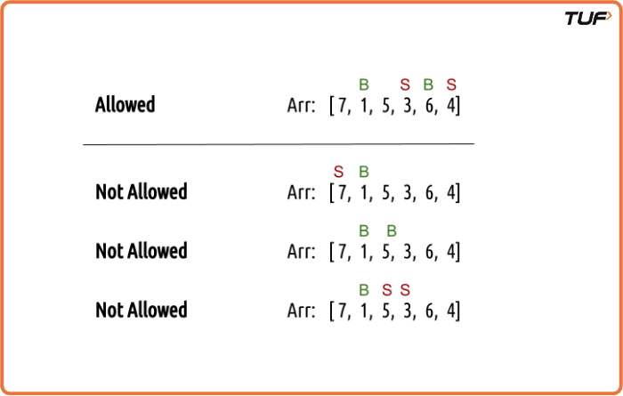
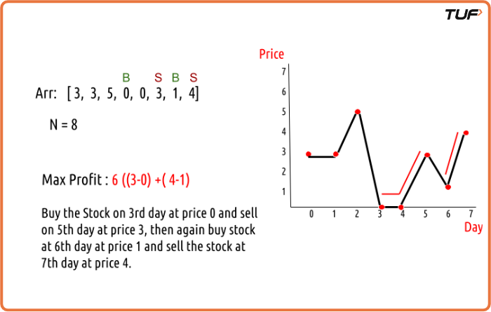

Buy and Sell Stock - IV | (DP - 38)
We are given an array Arr[] of length n. It represents the price of a stock on ‘n’ days. The following guidelines need to be followed
- We can buy and sell the stock any number of times.
- In order to sell the stock, we need to first buy it on the same or any previous day.
- We can’t buy a stock again after buying it once. In other words, we first buy a stock and then sell it. After selling we can buy and sell again. But we can’t sell before buying and can’t buy before selling any previously bought stock.
- We can do at most K transactions.

Examples
Example 1:
Array={3, 3, 5, 0, 0, 1, 4}
N=8
MaxProfit = 6 as ((3-0) + (4-1))
Explaination: Buy the stock on 3rd day at price 0 and sell the stock on 5th day at the price of 3. Then again buy stock at day 6 and sell the stock at 7th day at the price of 4

Disclaimer: Here is the practice link to help you assess your knowledge better. It's highly recommend trying to solve it before looking at the solution.
Memoization Approach
Algorithm
Intuition
This is similar to the "Buy and Sell Stock III" problem, but instead of two transactions, we can make up to K transactions. Each day, we can either do nothing or buy/sell based on the last action and how many transactions are left. We use recursion to try all choices and find the maximum profit.
- Think in terms of three things: the current day, whether we can buy or need to sell, and how many trades are left.
- If we can buy: either skip or buy the stock.
- If we need to sell: either skip or sell the stock (which completes one trade).
- Return the maximum profit from these options.
Base Cases
- If all days are finished → profit is 0.
- If no trades are left → profit is 0.
Memoization
- Use a 3d table to store answers for each combination of day, buy/sell state, and remaining trades.
- If a value is already calculated, use it instead of recalculating.
Code
#include <bits/stdc++.h>
using namespace std;
class StockBuySell{
int getAns(vector& Arr, int n, int ind, int buy, int cap, vector>>& dp) {
// Base case
if (ind == n || cap == 0) return 0;
// Check if the result is already computed
if (dp[ind][buy][cap] != -1)
return dp[ind][buy][cap];
int profit;
if (buy == 0) { // We can buy the stock
profit = max(0 + getAns(Arr, n, ind + 1, 0, cap, dp),
-Arr[ind] + getAns(Arr, n, ind + 1, 1, cap, dp));
}
if (buy == 1) { // We can sell the stock
profit = max(0 + getAns(Arr, n, ind + 1, 1, cap, dp),
Arr[ind] + getAns(Arr, n, ind + 1, 0, cap - 1, dp));
}
// Store the result in the DP array and return
return dp[ind][buy][cap] = profit;
}
int maximumProfit(vector& prices, int n, int k) {
// Creating a 3D DP array of size [n][2][k+1]
vector>> dp(n,
vector>(2, vector(k + 1, -1)));
return getAns(prices, n, 0, 0, k, dp);
}
int main() {
vector prices = {3, 3, 5, 0, 0, 3, 1, 4};
int n = prices.size();
int k = 2;
cout << "The maximum profit that can be generated is " << maximumProfit(prices, n, k) << endl;
return 0;
}
Complexity Analysis
Time Complexity: O(N*2*3) ,There are N*2*3 states therefore at max ‘N*2*3’ new problems will be solved.
Space Complexity: O(N*2*3) + O(N), We are using a recursion stack space(O(N)) and a 3D array ( O(N*2*3)).
Tabulation Approach
Algorithm
Tabulation Approach
We change the memoization method into a table-based method by creating a 3D table for all days, buy/sell states, and remaining trades.
Base Cases
- If we have finished all days, the profit is 0.
- If no trades are left, the profit is 0.
- We can just fill the whole table with 0 at the start to handle this.
Filling the Table
- Start from the last day and move to the first day.
- On each day, check both choices: either do the trade or skip it.
- Take the better (maximum profit) of the two choices and save it in the table.
Final Answer
The answer is the value at the first day when we can still buy and have two trades left.
Code
#include <bits/stdc++.h>
using namespace std;
class StockBuySell{
int maximumProfit(vector& Arr, int n, int k) {
// Creating a 3D DP array of size [n+1][2][k+1] initialized to 0
vector>> dp(n + 1,
vector>(2, vector(k + 1, 0)));
// Loop through the stock prices from the end to the beginning
for (int ind = n - 1; ind >= 0; ind--) {
for (int buy = 0; buy <= 1; buy++) {
for (int cap = 1; cap <= k; cap++) {
if (buy == 0) { // We can buy the stock
dp[ind][buy][cap] = max(0 + dp[ind + 1][0][cap],
-Arr[ind] + dp[ind + 1][1][cap]);
}
if (buy == 1) { // We can sell the stock
dp[ind][buy][cap] = max(0 + dp[ind + 1][1][cap],
Arr[ind] + dp[ind + 1][0][cap - 1]);
}
}
}
}
return dp[0][0][k];
}
int main() {
vector prices = {3, 3, 5, 0, 0, 3, 1, 4};
int n = prices.size();
int k = 2;
cout << "The maximum profit that can be generated is " << maximumProfit(prices, n, k) << endl;
return 0;
}
Complexity Analysis
Time Complexity: O(N*2*3), There are three nested loops that account for O(N*2*3) complexity.
Space Complexity: O(N*2*3), We are using an external array of size ‘N*2*3’. Stack Space is eliminated.
Space Optimization Approach
Algorithm
We only need the values from the next day to calculate the current day’s values, so we don’t need to keep the entire 3D table.
- Keep one table (ahead) to store the next day’s values and fill it with 0 initially.
- Use another table (cur) to calculate the current day’s values.
- For each day, calculate all values using ahead and store them in cur.
- After finishing the day, copy cur into ahead for the next calculation.
- The final answer is the value in ahead for the first day with the remaining trades left.
Code
#include <bits/stdc++.h>
using namespace std;
class StockBuySell{
int maximumProfit(vector& Arr, int n, int k) {
// Creating a 3D DP array of size [n+1][2][k+1] initialized to 0
vector>> dp(n + 1,
vector>(2, vector(k + 1, 0)));
// Loop through the stock prices from the end to the beginning
for (int ind = n - 1; ind >= 0; ind--) {
for (int buy = 0; buy <= 1; buy++) {
for (int cap = 1; cap <= k; cap++) {
if (buy == 0) { // We can buy the stock
dp[ind][buy][cap] = max(0 + dp[ind + 1][0][cap],
-Arr[ind] + dp[ind + 1][1][cap]);
}
if (buy == 1) { // We can sell the stock
dp[ind][buy][cap] = max(0 + dp[ind + 1][1][cap],
Arr[ind] + dp[ind + 1][0][cap - 1]);
}
}
}
}
return dp[0][0][k];
}
int main() {
vector prices = {3, 3, 5, 0, 0, 3, 1, 4};
int n = prices.size();
int k = 2;
cout << "The maximum profit that can be generated is " << maximumProfit(prices, n, k) << endl;
return 0;
}Complexity Analysis
Time Complexity: O(N*2*3), There are three nested loops that account for O(N*2*3) complexity
Space Complexity: O(1), We are using two external arrays of size ‘2*3’.